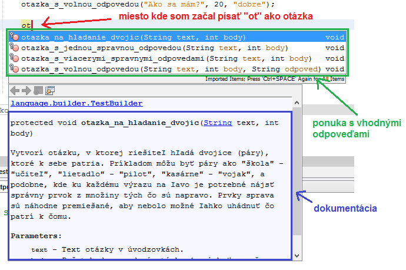
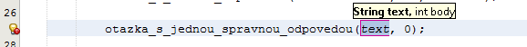
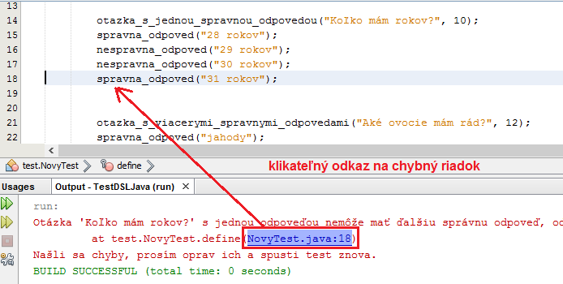

Prostredie NetBeans
V časti Vytvorenie vety sme už videli ako vieme využiť prostredie NetBeans na vytvorenie nového testu. V tejto časti si ukážeme ešte niekoľko skvelých funkcií, ktoré môžeš pri tvorbe testu využiť.
Dopĺňanie kódu
Jedným z mocných nástrojov prostredí je dopĺňanie kódu. V jazyku Test-it! ti táto funkcionalita umožní písať definíciu oveľa rýchlejšie a spoľahlivejšie. Keď začneš písať nejaký príkaz, stlačením kombinácie Ctrl + Medzerovník ti prostredie vyroluje ponuku s možnosťami, ktoré sa na dané miesto hodia, viď nasledujúci príklad (začal som písať slovo "ot", teda otazka):
{kind=link}
Naviac pri prezeraní ponúkaných možnosti (šípkami hore a dole) prostredie ukazuje aj dokumentáciu k daným príkazom (modrý rámček).
Vybranie jednej z ponúkaných možností potvrdíš stlačením klávesy Enter alebo klikom. Po tom prostredie vygeneruje použitie vybraného príkazu ako je to vidieť na nasledujúcom obrázku (vybral som príkaz otazka_s_jednou_spravnou_odpovedou):
{kind=link}
V tých zátvorkách môžeš vidiet návrh parametrov, text otázky, ten je potrebný prepísať s použitím úvodzoviek, a počet bodov je vygenerovaný na nulu.
Pozor na zátvorky! Tento jazyk je citlivý na správne použitie zátvoriek - ak nejakú zátvorku otvoríš (uvedieš zátvorku "("), musíš ju aj uzavrieť (použiť jej párovú zátvorku ")"). Prostredie ti tie zátvorky pekne generuje, ale dávaj si pozor aby si ich nezmazal (alebo neumiestnil zle), lebo tým môžeš test pokaziť a prostredie ho nebude schopné porozumieť.
Podpora chýb
Nedodržanie niektorých pravidiel pre písanie testov môže spôsobiť chybu a test sa nebude dať spustiť. V takom prípade prostredie chybu ohlási. Vezmime si príklad, že omylom definujeme dve správne odpovede v otázke s jednou správnou odpoveďou. V takom prípade sa pri pokuse o spustenie testu vypíše nasledovná chyba:
{kind=link}
Ako vidíme, vytvorí sa tiež klikateľný odkaz, ktorý nastaví kurzor na riadok, v ktorom je chyba. V tomto prípade samotná chyba oznamuje, že takýto typ otázky nemôže mať viacero správnych odpovedí, a že možné riešenie je zmazať správnu odpoveď na riadku 18, to jest odpoveď "31 rokov". Vďaka týmto klikateľným odkazom môžeš okamžite identifikovať miesto chyby a rýchlejšie danú chybu odstrániť.